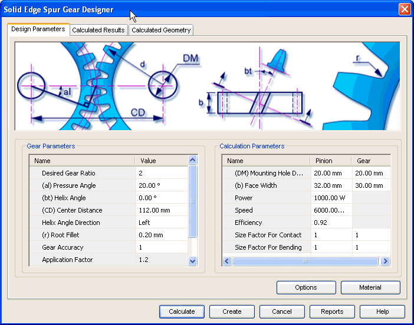

Spur Gear Design Parameters tab
The Design Parameters tab provides the options you use to enter details required for the design of spur gear.

Gear Parameters
Use this area to input parameters for design and strength calculations of a spur gear.
Calculation Parameters
Use this area to define specific parameters of gear and pinion.
Options button
Use the options button to access the Input Conditions window and select the type of gear and the method of calculation for strength check. The options provided in the Design Parameters tab are based on the selections in the Input Conditions window
Material button
Use the Material button to select the material of gear.